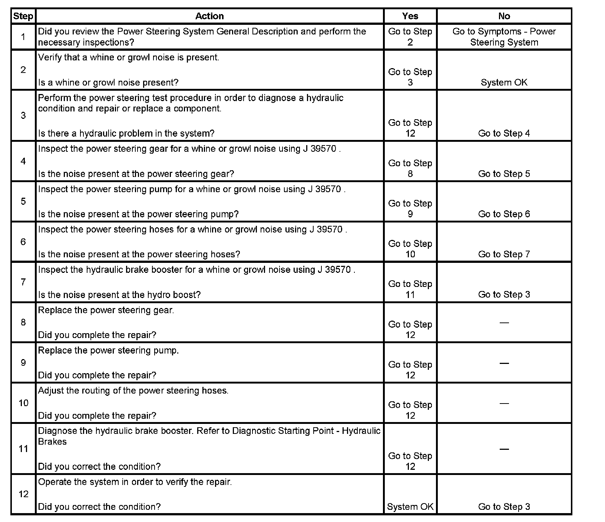

Operation CHARM
: Car repair manuals for everyone.
Home
>>
Cadillac
>>
2007
>>
Escalade ESV AWD V8-6.2L
>>
Repair and Diagnosis
>>
Steering and Suspension
>>
Steering
>>
Testing and Inspection
>>
Symptom Related Diagnostic Procedures
>>
Whine or Growl Noise from the Power Steering System (With Hydraulic Brake Booster)
Whine or Growl Noise from the Power Steering System (With Hydraulic Brake Booster)
Whine or Growl Noise from the
Power Steering
System (With Hydraulic Brake Booster)
Step 1 - Step 12:
